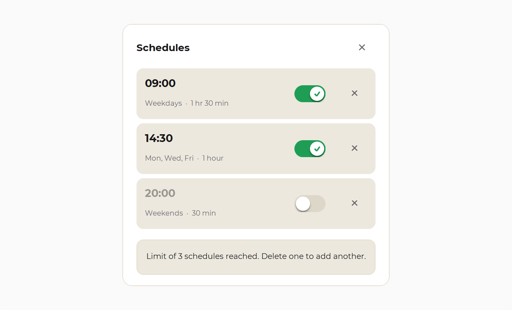
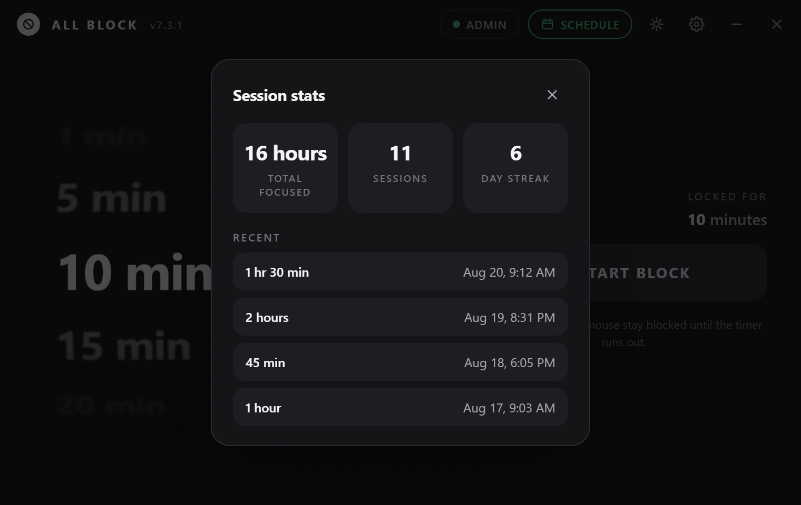
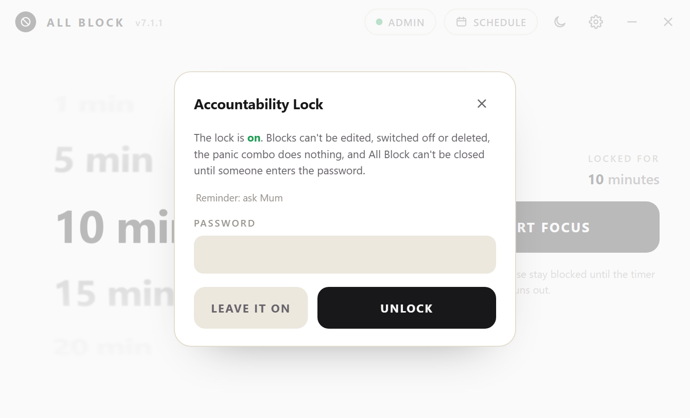
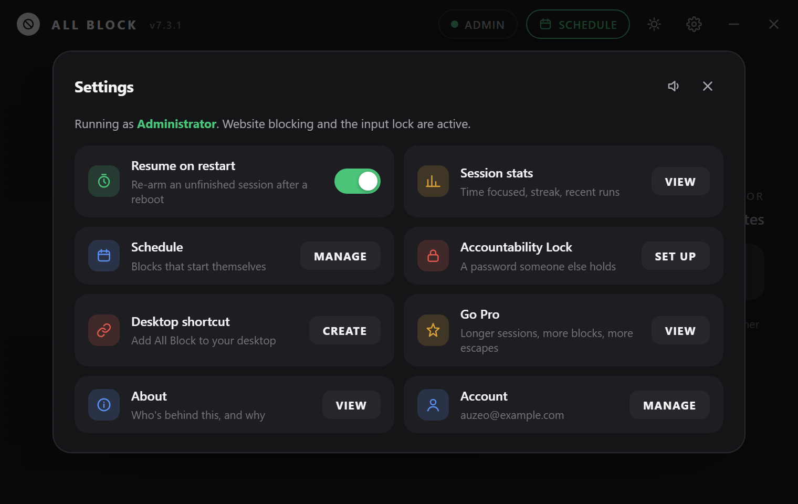
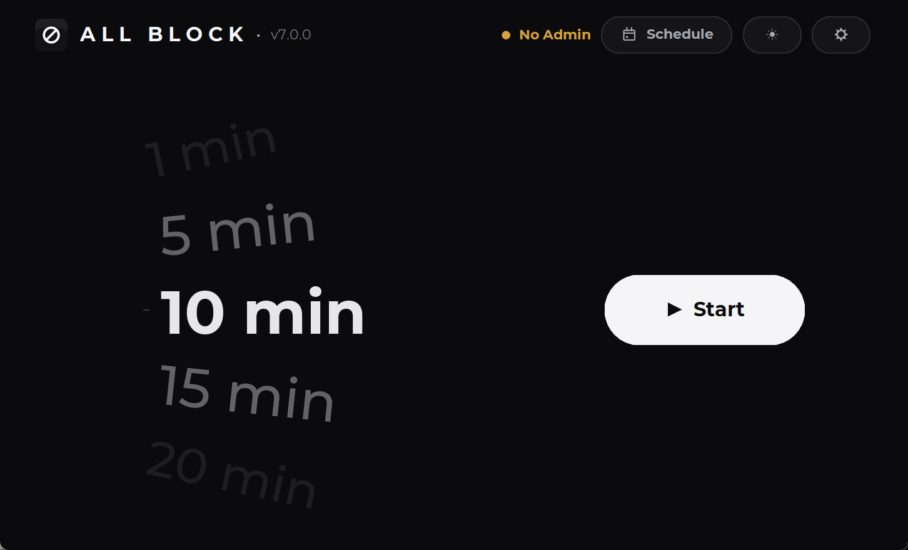
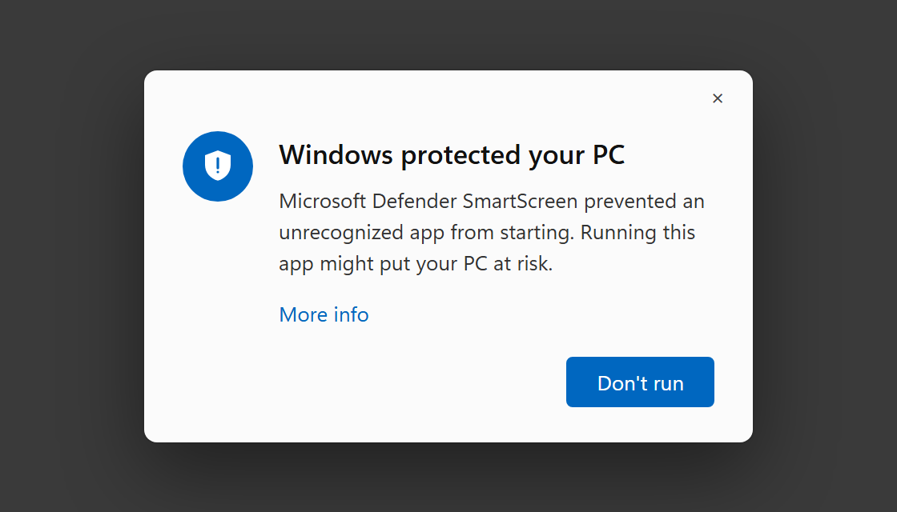
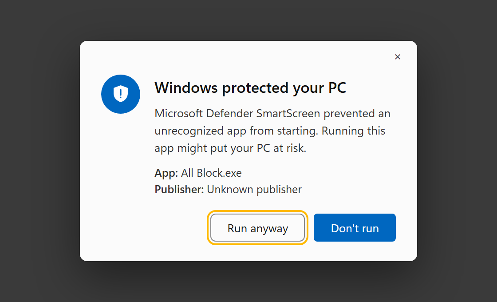
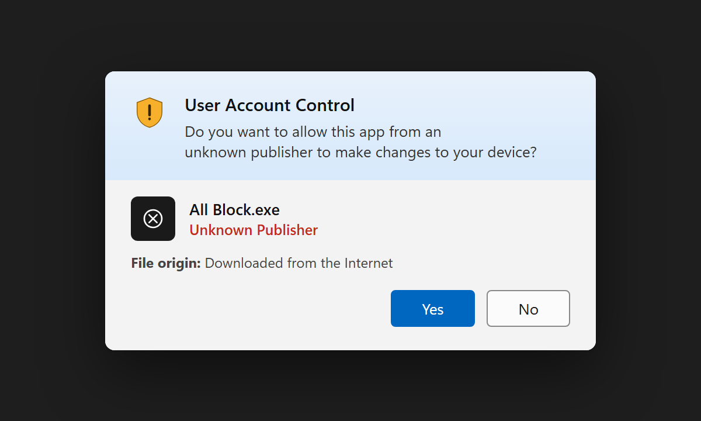

Windows · v7.1.0
Other blockers block a list you can edit. All Block switches your mouse and keyboard off until the timer ends.
Scroll the wheel — it's the real one
The block
Locked — keep scrolling
Your mouse and keyboard stop working — system-wide, not just in this app. No pause button, no “just five more minutes”, and it comes back still locked if you reboot to escape it.
Who it's for
Nobody installs a blocker because they're short of good intentions. They install one because the intention keeps losing to the moment. These are the moments people bring it here for.
From the research on self-control. Neither study is about All Block.
“Situational self-control strategies—which can nip a tempting impulse in the bud—may be especially effective in preventing undesirable action.”
Across 7,827 reports of everyday desire from 205 adults, desires for media use produced more self-control failures than any other kind.
Gaming · doomscrolling
You already know it's happening while it happens. That's the cruel part — and it's why a blocker you can switch off is no help at all. Set a block and the machine simply stops answering. There is nothing left to negotiate with.
Parents
No standing over anyone, no nightly argument, no clever child finding the setting you switched on. Schedule the evening, put the Accountability Lock on it, and the password is yours. The computer does the saying-no.
Sleep
The hours you lose aren't the ones you decided to stay up for — they're the ones that just kept going. A block that arrives on its own at 23:00 ends the night before it gets away from you, whether or not you'd have chosen to stop.
Study · deep work
Deciding to start is the hardest part of every session, and it's a decision you have to win again tomorrow. Put it in the schedule once and you never have to make it again — 09:00 arrives, and so does the block.
Coming from Cold Turkey or Freedom
Every other blocker works from a list of things — these sites, those apps, a list you're expected to keep current. A list has edges, and the itch is extraordinarily good at finding them: the app you forgot to add, the second browser, the phone hotspot, the setting you can still reach because your keyboard still works.
All Block keeps no list, because it isn't blocking things. It takes the mouse and the keyboard away for the length of the session. Not the browser — the computer. There is no app it forgot about and no window you can click into instead, because clicking has stopped happening.
And it closes the doors those apps leave open. It runs as admin, so nothing else can shut it down. It survives a reboot and comes back still locked. Task Manager, Alt+Tab and Ctrl+Alt+Del go with everything else.
Then the schedule removes the last door — you. A block that turns up on its own at 09:00 was never a decision you made, and the itch lives entirely inside that decision. Put the Accountability Lock on top and even you can't take it back.
Schedule
Starting is the decision you lose. So set the week once and stop making it — All Block turns up on time whether or not you were planning to be good that day.


Accountability Lock · Free
A schedule only holds until the person it's meant to stop goes into Settings and deletes it. So set a password — and let a parent, a partner, a friend, or your own steadier self twenty minutes ago be the one who holds it.

One thing it deliberately leaves alone: the monthly emergency unlock. A lock with no exit at all is how somebody ends up unable to answer a phone call — so the way out stays scarce and counted rather than disappearing.
A password that stops the schedule being edited, switched off or closed — by anyone who doesn't have it. Free, in every copy.
Reboot mid-block and it comes back still locked, with the clock where you left it.
Pick the days, the time and the length. It starts without being asked — three blocks free, as many as you like on Pro.
Focus time, sessions and a running streak — kept on your machine, nowhere else.
It runs as administrator, which is what lets it hold the lock against Task Manager and everything else on the machine.
Both are first-class, and the switch is one click in the header.


Pricing
Manual sessions, the schedule and the Accountability Lock are all free forever — that's the promise the app is shared on. Pro only lifts the caps on how long and how many.
Standard
No account, no expiry, no nag screen.
Pro
One payment. Not a subscription, not a rental.
Pro is bought inside All Block — open the app, hit Pro, and checkout opens in your browser. Payments are handled by Paddle, who act as the merchant of record. Full refund within 14 days, no questions asked — see the refund policy.
First run
All Block isn't code-signed yet, and SmartScreen warns about anything unsigned no matter what's in it. So you'll see this once, on the first launch. Here's the way through it.



Free download · Windows 10 & 11
One file, one wheel, and a computer that finally knows how to say no. Free to download, nothing to cancel.